The reasons behind your code end up in old chats, closed tabs and docs nobody reads.
useDebouncedSearch()Select some code and save it as an issue, a note or a component. AI writes the summary and tags.
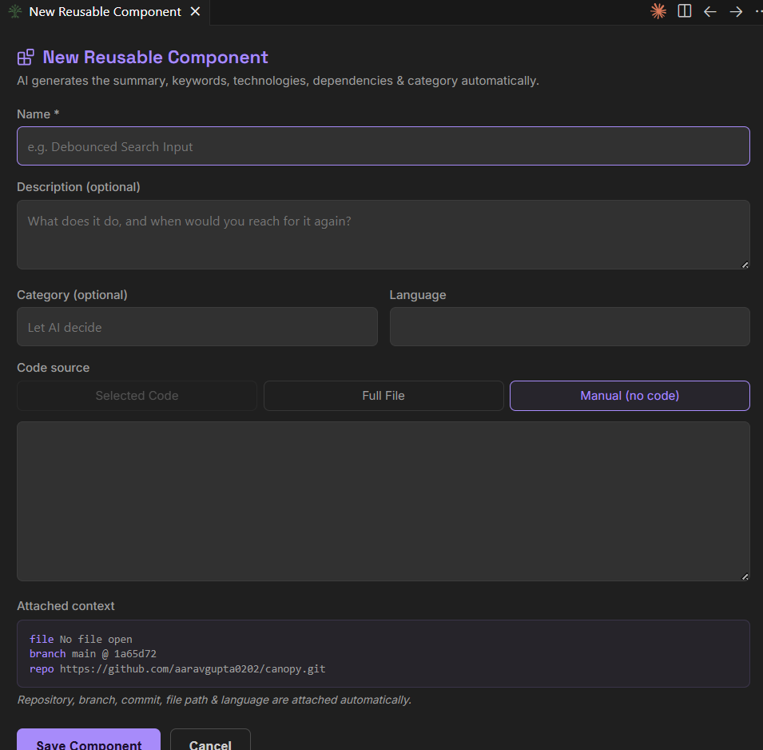
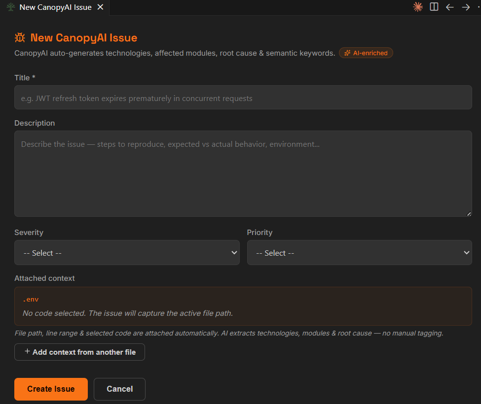
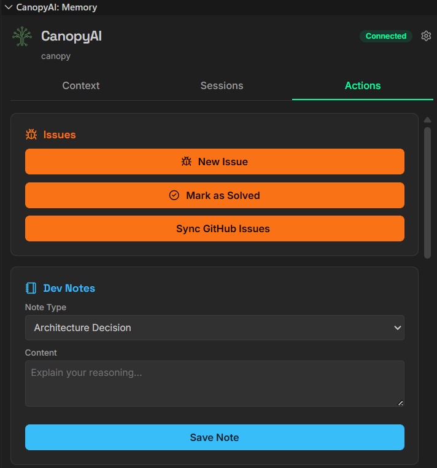
Open a file and Canopy shows the issues, notes and components related to it. If a line looks like a bug you already fixed, it shows you how you fixed it.
Answers come from your own history and show where each fact came from. You can search all your projects at once.
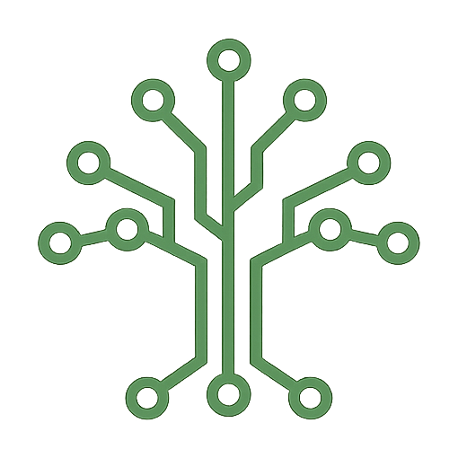
CanopyAI ChatcanopySay what you want changed. You review every file before anything is saved. Pre-Mortem warns you if this code has broken before.
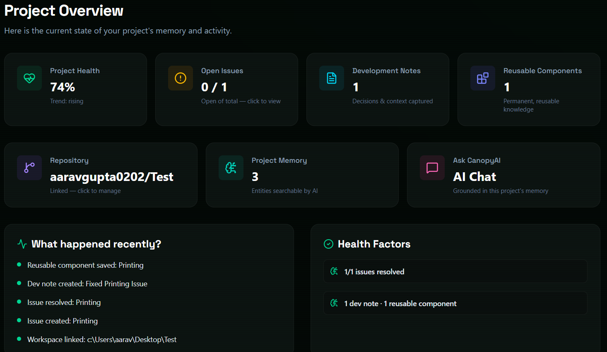
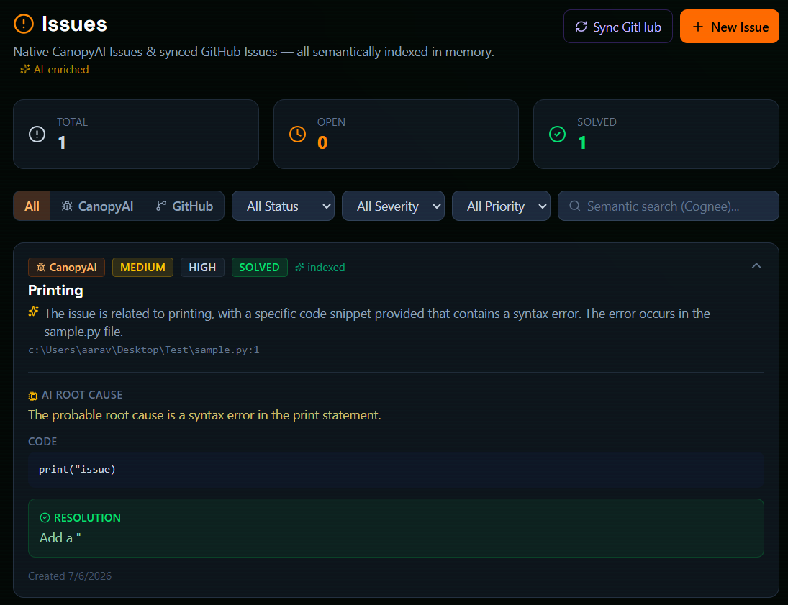
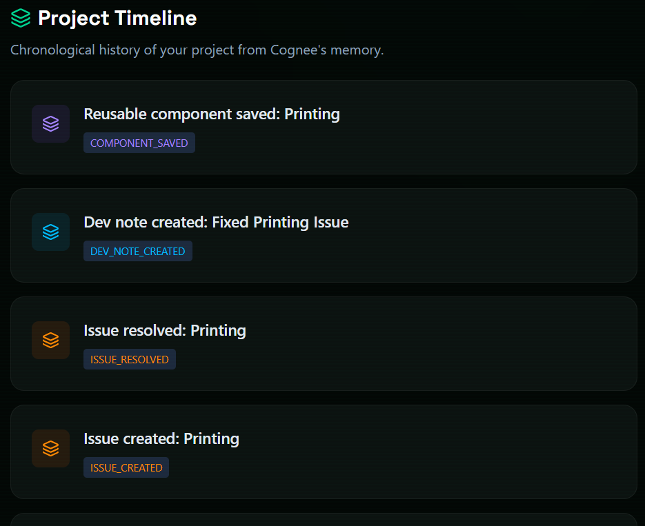
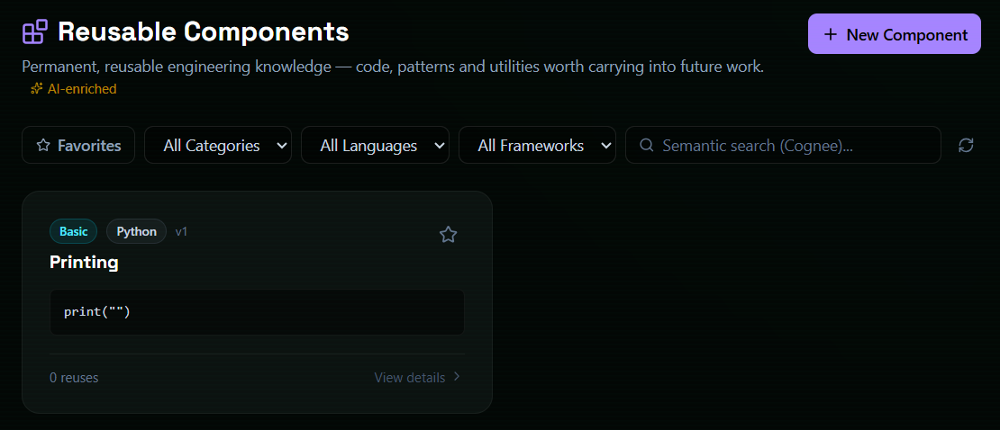
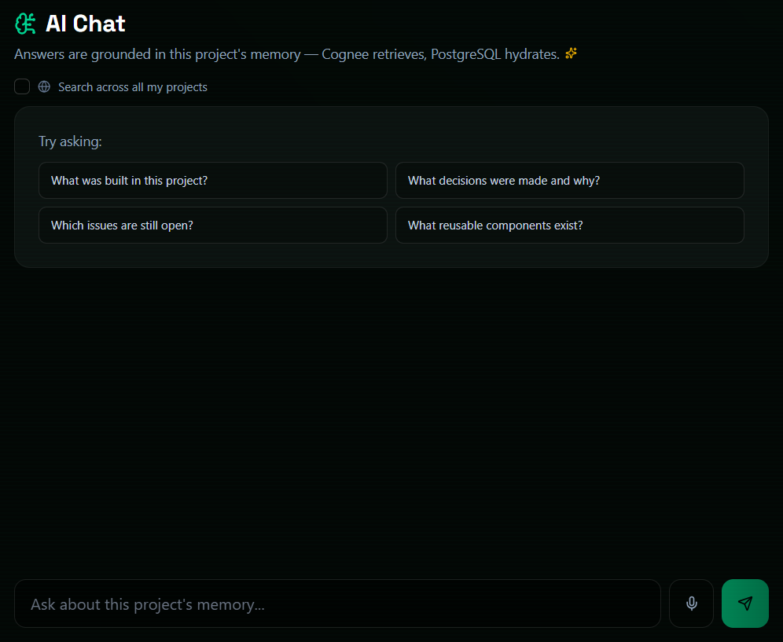
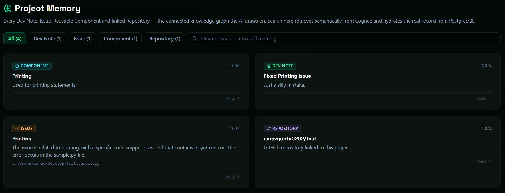
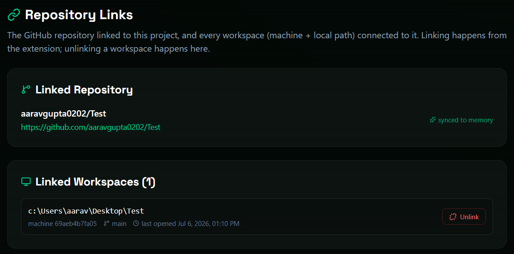
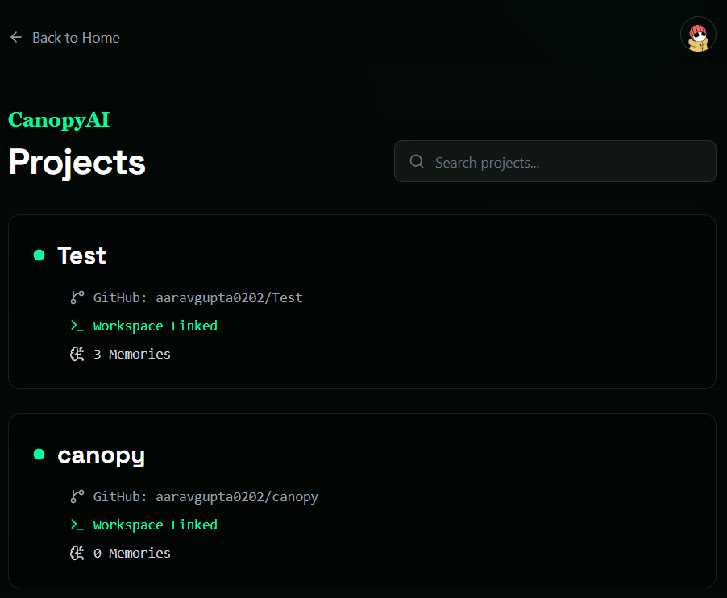
Projects, issues, timeline, components and chat. It updates live while you work in VS Code.
Each issue, note and decision you save is there the next time you need it. Your project gets easier to work on, not harder.
Your data is stored in PostgreSQL and linked together by Cognee. The extension and dashboard always stay in sync.
If the answer is yes, it goes into Canopy.